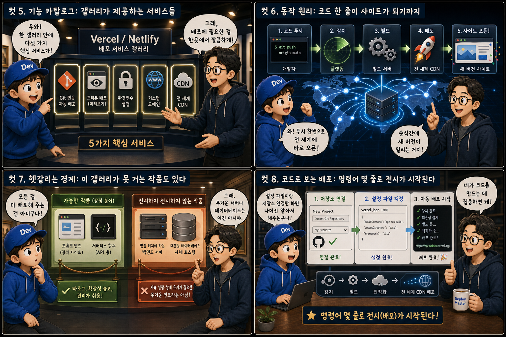

이미 다 갖춰진 전시관에 작품만 걸면 그날로 문을 여는 ‘즉시 개관 갤러리’에 비유해, 배포의 원리를 12컷으로 풀어봅니다.
VercelvsNetlify
내 컴퓨터 화면 속 코드 에디터에 떠 있는 파일들은 그 자체로는 나 혼자만 들여다볼 수 있는 결과물일 뿐입니다. 이것이 누구나 접속할 수 있는 웹사이트가 되려면 어딘가의 서버에 올라가 인터넷 주소와 연결되는 ‘배포’ 과정을 거쳐야 합니다. Vercel과 Netlify는 이 과정을 직접 건물을 짓지 않고도, 클릭 몇 번 혹은 코드 저장소 연결 한 번으로 끝내주는 즉시 개관 갤러리입니다. 작은 배송 상자 하나가 노트북 화면에서 튀어나와 하늘로 떠오르고, 그 궤적을 따라가면 어느새 블랙과 틸 조명이 나란히 빛나는 전시관이 나타나는 장면 — 이 글은 그 장면이 실제로 어떻게 일어나는지를 하나씩 따라가 봅니다.
PART 1 / 3 — 갤러리의 발견 (컷 01–04)
fourcut-01 — 컷 01 ~ 04
컷 01
내 코드는 어떻게 세상에 걸리는가
컴퓨터 안에서만 존재하던 코드가 인터넷 주소를 가진 사이트가 되려면, 누군가는 그것을 세상에 전시해야 한다.
우리가 만든 코드는 그 자체로는 내 컴퓨터 안에서만 실행되는 파일 뭉치일 뿐입니다. 이것이 누구나 접속할 수 있는 웹사이트가 되려면 어딘가의 서버에 올려두고 인터넷 주소를 연결하는 배포 과정이 필요합니다. Vercel과 Netlify는 이 배포 과정을 직접 건물을 짓지 않고도, 클릭 몇 번 혹은 코드 저장소 연결 한 번으로 끝내주는 ‘즉시 개관 갤러리’입니다. 배송 상자 하나가 하늘로 떠올라 반짝이는 궤적을 그리며 이미 액자가 걸려 있는 전시관으로 향하는 모습을 떠올려 보세요 — 그것이 바로 배포가 일어나는 순간의 인상입니다.
컷 02
정의부터 명확히: 즉시 개관 갤러리란 무엇인가
Vercel과 Netlify는 코드를 저장소에서 가져와 자동으로 빌드하고, 전 세계에 배포해 접속 가능한 상태로 만들어주는 호스팅 플랫폼이다.
Vercel과 Netlify는 내가 작성한 프론트엔드 코드를 대신 빌드(실행 가능한 형태로 조립)하고, 전 세계 곳곳의 서버에 뿌려서 어디서든 빠르게 접속할 수 있도록 만들어주는 호스팅 플랫폼입니다. 전통적으로는 건물, 즉 서버를 직접 빌리고 전기와 수도에 해당하는 운영체제와 웹서버 설정을 스스로 연결해야 전시가 가능했지만, 이 갤러리들은 이미 그 모든 기반 시설을 갖춰두고 있습니다. 개발자는 그저 완성된 작품 — 코드만 들고 오면 됩니다. hosting platform
컷 03
나란히 비교: 직접 지은 건물 vs 즉시 개관 갤러리
전통적인 서버(VPS) 배포는 건물을 임대해 OS와 웹서버까지 직접 설정해야 하지만, Vercel/Netlify는 저장소만 연결하면 자동으로 빌드와 배포가 이루어진다.
예전 방식대로 배포하려면 서버 한 대(VPS)를 빌린 뒤 운영체제를 설치하고, 웹서버 프로그램을 구성하고, 보안 설정까지 손수 해야 사이트 하나가 겨우 열렸습니다. 반면 Vercel이나 Netlify에서는 GitHub 같은 코드 저장소를 연결하기만 하면, 코드가 바뀔 때마다 알아서 빌드하고 배포까지 자동으로 처리해줍니다. 건물을 직접 짓는 대신, 이미 다 지어진 전시관에 작품만 걸면 되는 것과 같습니다.
컷 04
한 문장으로 정리하면
Vercel/Netlify는 코드 저장소와 연결된 순간부터 빌드, 배포, 호스팅까지 자동으로 이어지는 프론트엔드 전용 즉시 개관 갤러리다.
DEVELOPER
작품(코드)을 저장소에 올린다
PLATFORM
빌드·배포·호스팅을 자동으로 이어간다
definition
Vercel과 Netlify는 코드 저장소를 연결하는 순간부터 빌드와 배포, 호스팅까지 자동으로 이어지는 프론트엔드 전용 배포 플랫폼입니다. 서버 설정을 몰라도 되고, 인프라를 직접 관리하지 않아도 됩니다. 저장소에 코드를 올리는 것이 곧 전시관에 작품을 거는 행위와 같아집니다.
PART 2 / 3 — 서비스와 동작 원리 (컷 05–08)

fourcut-02 — 컷 05 ~ 08
컷 05
기능 카탈로그: 갤러리가 제공하는 서비스들
Vercel/Netlify는 Git 연동 자동 배포, 프리뷰 배포, 환경변수 설정, 커스텀 도메인, CDN이라는 다섯 가지 핵심 서비스를 하나의 갤러리 안에서 제공한다.
Git 연동 자동 배포는 코드 저장소에 변경 사항을 올리기만 하면 곧바로 새 버전이 반영되는 기능입니다. 프리뷰 배포는 아직 메인에 합치지 않은 브랜치도 별도의 임시 주소로 미리 확인할 수 있게 해주고, 환경변수 설정은 API 키처럼 코드에 직접 적으면 안 되는 값을 안전하게 저장소 밖에서 관리하게 해줍니다. 커스텀 도메인은 제공된 기본 주소 대신 내 이름의 도메인을 연결할 수 있게 하고, CDN은 전 세계 여러 지점에 사이트 사본을 미리 뿌려두어 어디서 접속해도 빠르게 로딩되도록 해줍니다.
컷 06
동작 원리: 코드 한 줄이 사이트가 되기까지
개발자가 코드를 저장소에 푸시하면 플랫폼이 이를 감지해 빌드하고, 결과물을 전 세계 CDN에 배포해 순식간에 새 버전의 사이트가 열린다.
git push→저장소 변경 감지→자동 빌드→전 세계 CDN 배포→라이브 사이트 갱신
개발자가 코드를 수정하고 저장소에 푸시(push)하면, Vercel이나 Netlify는 그 변경을 즉시 감지합니다. 이후 플랫폼은 코드를 실제 실행 가능한 형태로 조립하는 빌드 과정을 자동으로 수행하고, 완성된 결과물을 전 세계 여러 지점의 CDN 서버에 배포합니다. 이 모든 과정이 보통 몇십 초에서 몇 분 안에 끝나기 때문에, 코드를 올린 지 얼마 되지 않아 실제 주소로 접속하면 바뀐 내용이 곧바로 반영되어 있습니다.
컷 07
헷갈리는 경계: 이 갤러리가 못 거는 작품도 있다
Vercel/Netlify는 프론트엔드와 서버리스 함수 배포에 강하지만, 항상 켜져 있어야 하는 무거운 백엔드 서버나 대용량 데이터베이스 자체를 호스팅하는 곳은 아니다.
Vercel과 Netlify는 정적인 웹페이지나 프론트엔드 앱, 그리고 짧게 실행되고 끝나는 서버리스 함수를 배포하는 데 매우 강력합니다. 하지만 오랫동안 연결을 유지해야 하는 채팅 서버나, 무거운 연산을 계속 돌려야 하는 백엔드, 대용량 데이터베이스 자체를 이 플랫폼 안에 두는 것은 적합하지 않습니다. 이런 경우에는 별도의 데이터베이스 서비스나 백엔드 서버를 두고, Vercel/Netlify에 올린 프론트엔드가 API를 통해 그곳과 통신하도록 구성하는 것이 일반적입니다. not everything lives in the gallery
컷 08
코드로 보는 배포: 명령어 몇 줄로 전시가 시작된다
Git 저장소를 연결하고 설정 파일을 간단히 지정하는 것만으로도 플랫폼이 나머지 배포 과정을 자동으로 처리한다.
개발자가 해야 할 일은 대부분 평소처럼 git add, git commit, git push 세 줄로 끝납니다. 저장소에 변경 사항이 올라가는 순간 Vercel이나 Netlify는 이를 감지하고, 필요한 패키지를 설치한 뒤 빌드를 실행하고, 그 결과물을 배포해 실제 접속 가능한 주소를 만들어냅니다. 로그 화면에는 이 모든 과정이 순서대로 찍히기 때문에, 어느 단계에서 문제가 생겼는지도 쉽게 확인할 수 있습니다.
PART 3 / 3 — 실전 감각과 요약 (컷 09–12)
fourcut-03 — 컷 09 ~ 12
컷 09
흔한 실수: 창고 열쇠를 전시관에 두고 오지 않은 것
로컬 컴퓨터에서는 잘 작동하던 사이트가 배포 후 에러를 내는 흔한 원인은, 로컬에만 설정해둔 환경변수를 배포 환경에는 등록하지 않았기 때문이다.
⚠ .env is local only
로컬 컴퓨터에서는 .env 파일 같은 곳에 API 키나 비밀 값을 넣어두고 잘 작동하던 사이트가, 정작 Vercel이나 Netlify에 배포하면 갑자기 에러를 내는 경우가 매우 흔합니다. 이는 대부분 로컬에만 있는 환경변수를 배포 플랫폼의 환경변수 설정 화면에도 똑같이 등록해주지 않았기 때문에 생깁니다.
✓ 배포 환경에도 환경변수를 등록해야 한다
로컬의 .env 파일은 저장소에 올라가지 않는 것이 정상이므로, 배포 환경에서는 그 값을 플랫폼의 대시보드에서 별도로 한 번 더 입력해줘야 합니다. 이 한 단계를 잊으면 로컬에서는 되던 기능이 배포 후에만 조용히 망가지는 상황을 겪게 됩니다.
내 컴퓨터 안 창고에는 열쇠(환경변수)가 가지런히 걸려 있어 무사히 작품을 완성할 수 있었지만, 배포된 갤러리의 열쇠걸이는 텅 비어 있는 셈입니다. 열쇠를 챙기지 않으면 완성된 작품(사이트)도 벽에 걸리지 못하고 자물쇠 앞에서 멈춰 버립니다.
컷 10
트레이드오프 비교표: 편리함과 제약 사이
복잡한 서버 설정 없이 몇 클릭으로 배포할 수 있는 편리함을 얻는 대신, 세밀한 서버 커스터마이징에는 제약이 따를 수 있다.
convenience vs customization
비교 축
직접 서버 관리 (VPS)
Vercel / Netlify
초기 설정 난이도
OS 설치 · 웹서버 구성 · 방화벽까지 직접
저장소 연결 버튼 하나
배포 속도
수동 설정에 시간 소요
push 즉시 자동 빌드·배포
서버 세부 설정 자유도
원하는 대로 전부 설정 가능
플랫폼이 정한 방식 안에서만
운영 부담
보안 패치 등 지속적인 관리 필요
운영을 플랫폼이 대신함
비용 구조
고정 임대료 성격
사용량 기반 계량 과금
Vercel과 Netlify를 쓰면 복잡한 서버 설정 없이 코드 저장소만 연결해도 몇 클릭, 혹은 자동으로 배포가 끝나기 때문에 초기 진입 장벽이 매우 낮습니다. 하지만 그 편리함은 플랫폼이 미리 정해둔 방식 안에서 움직인다는 뜻이기도 해서, 서버의 세부적인 설정을 마음대로 바꾸거나 특수한 운영체제 수준의 작업이 필요한 경우에는 제약을 느낄 수 있습니다. 반대로 직접 서버(VPS)를 관리하면 원하는 대로 모든 것을 설정할 수 있지만, 그만큼 초기 설정과 지속적인 운영 부담을 개발자가 직접 짊어져야 합니다.
컷 11
실전 활용: 자동 배포를 확인하고 실패하면 로그부터
git push만으로 사이트가 자동으로 갱신되는 흐름을 직접 확인해보고, 배포가 실패했을 때는 무엇보다 먼저 빌드 로그를 읽는 것이 가장 빠른 해결의 시작이다.
🔍 정상 흐름 확인하기
일부러 작은 문구 하나만 바꿔 git push
대시보드에서 배포 진행 상태 확인
실제 사이트 주소에서 변경 반영 확인
🔍 배포가 실패했을 때
대시보드의 빌드 로그부터 확인
어느 단계에서 실패했는지 확인
환경변수 누락 여부 점검
처음 Vercel이나 Netlify를 쓸 때는 일부러 아주 작은 문구 하나만 바꿔 git push를 해보고, 대시보드에서 몇 초 뒤 실제 사이트 주소의 문구가 바뀌는 것을 직접 확인해보는 것이 좋습니다. 이 흐름을 눈으로 한 번 확인하고 나면 배포라는 개념이 훨씬 손에 잡히게 됩니다. 반대로 배포가 실패했다는 알림을 받았을 때는 당황해서 코드를 이것저것 고치기보다, 먼저 대시보드에 남는 빌드 로그를 차분히 읽는 것이 우선입니다. 로그에는 어느 단계에서, 어떤 이유로 실패했는지가 대부분 구체적으로 적혀 있기 때문에, 로그를 읽는 습관이 문제 해결 시간을 크게 줄여줍니다.
컷 12
판별법과 핵심 요약: 갤러리가 문을 여는 순간
저장소에 코드를 올리는 순간 자동으로 빌드되고 세상에 공개된다면 그것이 바로 Vercel/Netlify 같은 즉시 개관 갤러리의 핵심이다.
가장 간단한 판별법은 이것입니다. 코드 저장소에 변경 사항을 올리기만 했는데 별도의 서버 설정 없이 자동으로 빌드되고 새 주소나 갱신된 사이트로 곧장 공개된다면, 그것이 바로 Vercel이나 Netlify 같은 즉시 개관 갤러리의 방식입니다. 개발자는 코드라는 작품을 완성해 저장소에 올려두는 것까지만 책임지고, 그 작품을 벽에 걸고 조명을 켜고 문을 여는 나머지 과정은 플랫폼이 대신해줍니다. 다만 무거운 상시 서버나 대용량 데이터베이스처럼 이 갤러리 안에 걸 수 없는 작품이 있다는 것, 그리고 로컬에서만 통하던 환경변수는 배포 환경에도 따로 옮겨 걸어야 한다는 것만 잊지 않으면, 이 도구는 내 코드를 세상에 공개하는 가장 빠른 길이 되어줍니다.
Git 연동 자동 배포프리뷰로 미리보기환경변수는 배포 환경에도 등록커스텀 도메인 연결 가능무거운 서버·DB는 별도판별법: push하면 자동으로 열리면 이 갤러리
즉시 개관 갤러리, 그 문이 열리는 순간
개발자는 코드라는 작품을 완성해 저장소에 올려두는 것까지만 책임지고, 벽에 걸고 조명을 켜고 문을 여는 나머지는 Vercel과 Netlify가 대신합니다. 다만 무거운 상시 서버와 대용량 데이터베이스, 그리고 배포 환경에도 옮겨 걸어야 하는 환경변수만 잊지 않으면, 이 도구는 내 코드를 세상에 공개하는 가장 빠른 길이 되어줍니다.